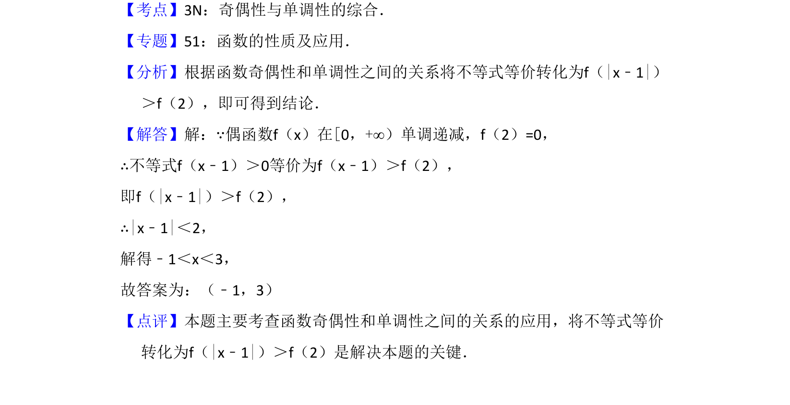

考点：函数奇偶性 函数单调性 抽象不等式
利用偶函数单调性将抽象不等式转化为绝对值不等式求解。

📄 原 PDF 第 11 页：
素材/真题/吉林/2008-2024·（吉林）数学高考真题/2014年高考数学试卷（理）（新课标Ⅱ）（解析卷）.pdf
15．（5分）已知偶函数f（x）在[0，+∞）单调递减，f（2）=0，若f（x﹣1） ＞0，则x的取值范围是 （﹣1，3） ．
【考点】3N：奇偶性与单调性的综合．菁优网版权所有 【专题】51：函数的性质及应用． 【分析】根据函数奇偶性和单调性之间的关系将不等式等价转化为f（|x﹣1|） ＞f（2），即可得到结论． 【解答】解：∵偶函数f（x）在[0，+∞）单调递减，f（2）=0， ∴不等式f（x﹣1）＞0等价为f（x﹣1）＞f（2）， 即f（|x﹣1|）＞f（2）， ∴|x﹣1|＜2， 解得﹣1＜x＜3， 故答案为：（﹣1，3） 【点评】本题主要考查函数奇偶性和单调性之间的关系的应用，将不等式等价 转化为f（|x﹣1|）＞f（2）是解决本题的关键．